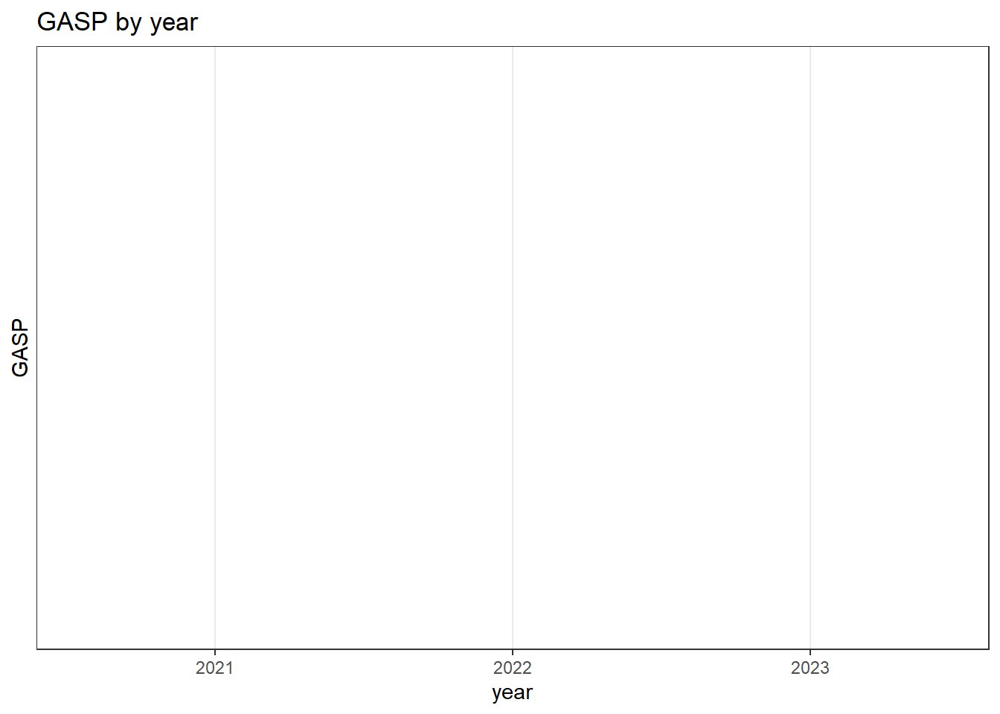
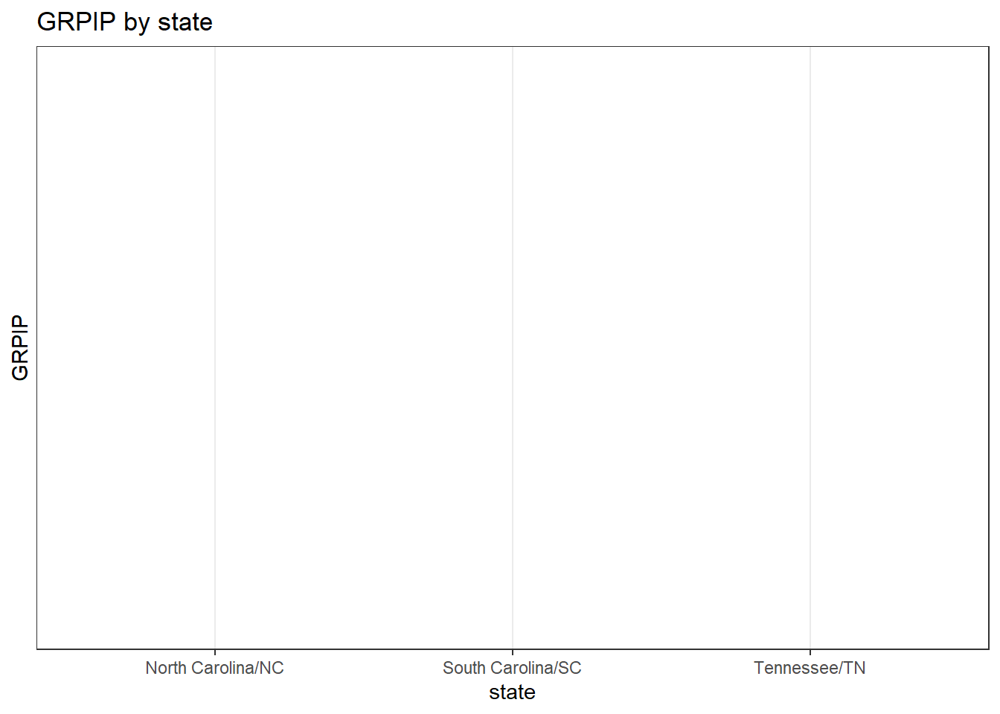

library(tidyverse)
library(httr)
library(jsonlite)
library(lubridate)
library(hms)
library(janitor)ST558 - Project 1
Introduction
1. Data Processing
1.1 Parsing Variable Values
First we start by loading the libraries that we need
Preparing the data we start downloading and parsing the JSON files with the variables description.
To perform this job we need to create a link that it is needed to request the variables info from the census API, as year is one of our variables, we use the function paste0() to add the year that is going to be used by the function.
Then we feed the link to the function GET() and parse the data from the JSON file.
We get the variables that we need (Shown below in the function definition), applying the correct modification for "ST" when the year is 2021 or 2022.
var_census <- function(year){
link <- paste0("https://api.census.gov/data/", as.character(year),
"/acs/acs1/pums/variables.json")
census_var <- GET(url = link)
var_parsed <- fromJSON(rawToChar(census_var$content))[[1]]
state <- "STATE"
if(year %in% c(2021, 2022)){
state <- "ST"
}
var_to_keep <- c("AGEP", "GASP", "GRPIP", "JWAP", "JWDP", "JWMNP", "PWGTP",
"FER", "HHL", "SCH", "SCHL", "SEX", state, "REGION",
"DIVISION")
var_parsed <- var_parsed[var_to_keep]
return(var_parsed)
}Now we need to get the variables for each year, and save them in a list that we will save in a .rds file.
Variables_21_24 <- list(
Variables_21 = var_census(2021),
Variables_22 = var_census(2022),
Variables_23 = var_census(2023),
Variables_24 = var_census(2024)
)
saveRDS(Variables_21_24, file = "data/Variables_census.rds")1.2 Parsing API Data
Start by getting the usual process to work with a given URL??
We are going to write a helper function that takes what is returned by GET() and turn it into a nice tibble.
get_to_tibble <- function(u_info){
parsed <- fromJSON(rawToChar(u_info$content))
n_tibble <- as_tibble(parsed) |>
row_to_names(row_number = 1)
return(n_tibble)
}Now we are going to create a function to query the census API, where the user specifies year, the numeric and categorical variables to be returned, the geography level, and the specific region, division or state to subset the data on.
We are going to use this helper function to handle the time variables (created using LLM).
parse_jwp_midpoint <- function(jwp_vector) {
# 1. Regex pattern to extract ONLY valid time range substrings
# Ignores prefixes like "001: " and returns NA for non-time entries like "0: N/A..."
pattern <- "\\d{1,2}:\\d{2}\\s*(?:a\\.m\\.|p\\.m\\.|am|pm)\\s+to\\s+\\d{1,2}:\\d{2}\\s*(?:a\\.m\\.|p\\.m\\.|am|pm)"
time_ranges <- stringr::str_extract(jwp_vector, pattern)
# 2. Clean dots from a.m./p.m.
clean_vec <- gsub("\\.", "", time_ranges)
# 3. Split into start and end time columns
times_matrix <- stringr::str_split_fixed(clean_vec, " to ", 2)
# 4. Parse times into POSIXct objects
t_start <- parse_date_time(times_matrix[, 1], orders = "I:M p", quiet = TRUE)
t_end <- parse_date_time(times_matrix[, 2], orders = "I:M p", quiet = TRUE)
# 5. Handle overnight ranges (e.g., 11:50 p.m. to 12:10 a.m.)
overnight <- !is.na(t_start) & !is.na(t_end) & (t_end < t_start)
t_end[overnight] <- t_end[overnight] + days(1)
# 6. Calculate midpoint and convert to time class
midpoint <- t_start + (t_end - t_start) / 2
as_hms(midpoint)
}parse_census <- function(user_year = 2024, num_var = c("AGEP", "PWGTP"),
cat_var = c("SEX"), geo = "STATE", sub_geo = NULL ){
#Checking for the correct year
user_year <- as.numeric(user_year)
if(!(user_year %in% c(2021, 2022, 2023, 2024)) || length(user_year) != 1){
stop("Year should be one of (2021, 2022, 2023, or 2024)")
}
geo_api <- tolower(geo)
#
# if(user_year %in% c(2021, 2022)){
# geo <- "ST"
# }
#
#Turning every input in upper case to standardize
num_var <- toupper(as.character(num_var))
cat_var <- toupper(as.character(cat_var))
geo <- toupper(as.character(geo))
#Checking for the presence of "PWGTP", always needs to be returned
if(!("PWGTP" %in% num_var)){
num_var <- c(num_var, "PWGTP")
}
#Checking that also another numeric variable is shown
if(length(num_var) == 1 && num_var == "PWGTP"){
print("Needs to specify a numric variable other than `PWGTP`, `AGEP` will be added by default")
num_var <- c("AGEP", num_var)
}
#Checking that the numeric variables are in the allowed values
num_allowed <- c("AGEP", "GASP", "GRPIP", "JWAP", "JWDP", "JWMNP", "PWGTP")
if (!all(num_var %in% num_allowed)){
stop("Numeric variables need to be between (AGEP, GASP, GRPIP, JWAP (time), JWDP (time), and JWMNP")
}
#Checking for the categorical variables
cat_allowed <- c("FER", "HHL", "SCH", "SCHL", "SEX")
if(!all(cat_var %in% cat_allowed))
stop("Categorical variables need to be between (FER, HHL, SCH, SCHL, and SEX)")
#Checking that the geography level is just one of the geographies allowed
geo_allowed <- c("REGION", "DIVISION", "STATE", "ST")
if(!(geo %in% geo_allowed) || length(geo) != 1){
stop("Geography level needs to be ONE between REGION, DIVISION, or STATE")
}
#Variable for the API query, which always use "state" in the query.
geo_api <- tolower(geo)
#Variable for the stored data
geo_var <- if(user_year %in% c(2021, 2022) && geo == "STATE") {
"ST"
} else {
geo
}
# Checking that the allowed variables are correct
year_2digit <- substr(as.character(user_year), 3, 4)
#Get it to look in the correct list of variables
target_name <- paste0("Variables_", year_2digit)
Variables <- readRDS("data/Variables_census.rds")
variables_m <- Variables[[target_name]]
#Lower case to filter the api
#geo_api <- tolower(geo)
#Assigning default values for each of the geography levels
if(is.null(sub_geo)){
sub_geo <- switch(
geo,
STATE = "North Carolina/NC",
ST = "North Carolina/NC",
REGION = "South",
DIVISION = "East South Central (South region)"
)
}
#print(paste0("after", geo))
if(all(tolower(sub_geo) != "all") &&
!all(sub_geo %in% variables_m[[geo_var]]$values$item)){
stop(paste0("Geography subset is not valid for ",geo))
}
#Turning inputs in census codes
geo_lookup <- variables_m[[geo_var]]$values$item
#print(geo_lookup)
#print(sub_geo)
if(all(tolower(sub_geo) == "all")){
geo_codes <- "*"
} else {
geo_codes <- names(geo_lookup[match(sub_geo, geo_lookup)])
geo_codes <- as.character(geo_codes)
geo_codes <- paste(geo_codes, collapse = ",")
}
#print(geo_codes)
#Putting the columns into a string for the query
all_col <- unique(c(num_var, cat_var))
string_cols <- paste(all_col, collapse = ",")
census_key <- Sys.getenv("census_key")
#As the api just allow to request one geography or all geographies, we will create a helper for one geography and then mix the outputs.
census_response <- httr::GET(
url = paste0("https://api.census.gov/data/",as.character(user_year),
"/acs/acs1/pums"),
query = list(
get = string_cols,
`for` = paste0(geo_api, ":", geo_codes),
key = census_key
)
)
#census_response
census_data <- get_to_tibble(census_response)
#Changing the categorical variables into factors
for (one_cat in cat_var){
#Get the list that we are going to use to look up
cat_lookup <- variables_m[[one_cat]]$values$item
#Obtain a names vector to look for the variables that match
cat_lookup <- unlist(cat_lookup,
use.names = TRUE)
#Lookup and replace the values
census_data[[one_cat]] <- factor(
unname(cat_lookup[as.character(census_data[[one_cat]])])
)
}
#Changing the time variables into theit midpoint
time_var <- intersect( c("JWAP", "JWDP"),
names(census_data))
#We are going to iterate to get the actual string based on the code provided
for (one_time in time_var){
#Getting the list to lookup
time_lookup <- variables_m[[one_time]]$values$item
#Turning them int a named vector
time_lookup <- unlist( time_lookup,
use.names = TRUE)
#Putting the time string before using the midpoint function helper
time_string <- unname( time_lookup[as.character(census_data[[one_time]])]
)
#Now we can rename the column with the codes and use the midpoint function
census_data[[one_time]] <- parse_jwp_midpoint(time_string)
}
#Getting the values that are different from the time variables
numeric_var <- setdiff( num_var,
c("JWAP", "JWDP"))
#Changing them to numric variables
census_data <- census_data |>
mutate(
across(
any_of(numeric_var),
as.numeric
)
)
#And we want to get the labels for the geography data
geo_column <- geo_api
#We also need to get the correct value to look for in the variables (different for 2021 and 2022)
geo_lookup <- variables_m[[geo_var]]$values$item
#We get the named vector
geo_lookup <- unlist(geo_lookup, use.names = TRUE)
#and we put the names in the tibble
census_data[[geo_column]] <- factor(
unname( geo_lookup[as.character(census_data[[geo_column]])])
)
#Required code
class(census_data) <- c("census", class(census_data))
census_data
}1.3 Combining Years
Now we are going to create a function that will use the previous function for multiple years and will append those tibbles in a new tibble with the specified year.
parse_census_years <- function(user_years = c(2022, 2024),
num_var = c("AGEP", "PWGTP"),
cat_var = c("SEX"),
geo = "STATE",
sub_geo = NULL){
#Checking that the years are allowed
user_years <- as.numeric(user_years)
if( !all(user_years %in% c(2021, 2022, 2023, 2024))){
stop ("Years should be between 2021, 2022, 2023, or 2024")
}
#Create a list for the results
census_list <- list()
#Now we use a loop for each year
for (one_year in user_years){
#applying the funstion prevously created for each year
census_year <- parse_census(
user_year = one_year,
num_var = num_var,
cat_var = cat_var,
geo = geo,
sub_geo = sub_geo
)
#Now we add the year variable
census_year <- census_year |>
mutate(year = one_year)
#and finally we save the tibble in the list
census_list[[as.character(one_year)]] <- census_year
}
#Finally we combine all the results from the list of tibbles into a tibble
census_all <- bind_rows(
census_list) |>
relocate(year)
return(census_all)
}1.4 Testing
First we are going to check that the restrictions work.
The first one is check that is for the correct years.
parse_census_years(2020)Error in `parse_census_years()`:
! Years should be between 2021, 2022, 2023, or 2024#For a different numeric variable than the allowed
parse_census_years(2021, num_var = "AGS")Error in `parse_census()`:
! Numeric variables need to be between (AGEP, GASP, GRPIP, JWAP (time), JWDP (time), and JWMNP#Trying to get more than one geography
parse_census_years(2022, geo = c("REGION", "STATE"))Error in `!(geo %in% geo_allowed) || length(geo) != 1`:
! 'length = 2' in coercion to 'logical(1)'#Requesting geographies that are not part of the one chosen
parse_census_years(2022, geo = "STATE", sub_geo = "South")Error in `parse_census()`:
! Geography subset is not valid for STATENow we are going to extract data that is valid and get the tibble for those.
Using the smallest state (by population) to make sure it runs smoothly.
WY_data <- parse_census_years(2021:2023, num_var = c("AGEP", "GASP", "JWAP"),
cat_var = c("FER", "SEX"), geo = "STATE",
sub_geo = "Wyoming/WY")Warning: The `x` argument of `as_tibble.matrix()` must have unique column names if
`.name_repair` is omitted as of tibble 2.0.0.
ℹ Using compatibility `.name_repair`.WY_data# A tibble: 17,847 × 8
year AGEP GASP JWAP PWGTP FER SEX state
<dbl> <dbl> <dbl> <time> <dbl> <fct> <fct> <fct>
1 2021 38 3 NA 39 No Fema… Wyom…
2 2021 21 3 08:37 45 N/A (less than 15 years/greater t… Male Wyom…
3 2021 47 3 NA 218 No Fema… Wyom…
4 2021 85 3 NA 10 N/A (less than 15 years/greater t… Fema… Wyom…
5 2021 19 3 NA 12 N/A (less than 15 years/greater t… Male Wyom…
6 2021 19 3 NA 108 No Fema… Wyom…
7 2021 48 3 NA 91 N/A (less than 15 years/greater t… Male Wyom…
8 2021 87 3 NA 71 N/A (less than 15 years/greater t… Fema… Wyom…
9 2021 36 3 NA 8 N/A (less than 15 years/greater t… Male Wyom…
10 2021 9 3 NA 122 N/A (less than 15 years/greater t… Male Wyom…
# ℹ 17,837 more rows2. Writing a Generic Function for Summarizing
2.1 Numeric Summaries
For census summary method we are going to write a function that produces means and standard deviations for our numeric variable, and counts for the categorical variables.
summary.census <- function(census_tibble, num_var = NULL, cat_var = NULL){
#Getting all the summaries for the numeric variables when num_var is not especified
if( is.null(num_var)){
#First we select all the variables that are numeric
num_var <- names(census_tibble)[sapply(census_tibble, is.numeric)]
#And remove the variables that we cannot do summaries with
num_var <- setdiff(num_var, c("PWGTP", "year", "JWAP", "JWDP"))
} else{
#we standardize the input
num_var <- toupper(as.character(num_var))
#And remove the time variable which cannot be summarized
num_var <- setdiff(num_var, c("PWGTP", "JWAP", "JWDP"))
}
#And we are going to do the same for the categorical variables
if(is.null(cat_var)){
#Get the categorical variables
cat_var <- names(census_tibble)[sapply(census_tibble,
function(x){is.factor(x) ||
is.character(x)})]
#Year needs to be treated as categorical
if("year" %in% names(census_tibble) && !("year" %in% cat_var)){
cat_var <- c(cat_var, "year")
}
} else {
cat_var <- as.character(cat_var)
#Now we are going to correct the case for the geography and year variables from the tibble
for (i in seq_along(cat_var)){
if(!(cat_var[i] %in% names(census_tibble)) &&
toupper(cat_var[i]) %in% names(census_tibble)){
cat_var[i] <- toupper(cat_var[i])
}
}
}
#Checking that the requested variable exist
num_not_found <- setdiff(num_var,
names(census_tibble))
if (length(num_not_found) > 0) {
stop("The numeric variables were not found")
}
cat_not_found <- setdiff(cat_var,
names(census_tibble))
if (length(cat_not_found) > 0) {
stop("The categorical variables were not found")
}
#For the output, we are going to store our results in lists
num_summaries <- list()
cat_summaries <- list()
#We are going to calculate the numeric summaries
for (one_num_var in num_var) {
numeric_vector <- census_tibble[[one_num_var]]
weight_vector <- census_tibble[["PWGTP"]]
# Keeping only observations where the variable and weight exist
complete_observations <- (!is.na(numeric_vector) &
!is.na(weight_vector))
numeric_vector_complete <- numeric_vector[complete_observations]
weight_vector_complete <- weight_vector[complete_observations]
#We need to check that observations exist where both of the values match
if (
length(numeric_vector_complete) == 0 ||
sum(weight_vector_complete) == 0
) {
sample_mean <- NA_real_
sample_sd <- NA_real_
} else {
# After confirming that, we proceed to calculate the summaries
sample_mean <- sum(numeric_vector_complete *
weight_vector_complete) /
sum(weight_vector_complete)
# Weighted sample standard deviation
sample_sd <- sqrt( sum(numeric_vector_complete^2 *
weight_vector_complete) /
sum(weight_vector_complete) -
sample_mean^2)
}
# Save the results for the variable in the list
num_summaries[[one_num_var]] <- c(mean = sample_mean,
standard_deviation = sample_sd)
}
#And we calculate the values for the categorical variables
for (one_cat_var in cat_var) {
categorical_vector <- census_tibble[[one_cat_var]]
# Year must be treated as categorical
if (one_cat_var == "year") {
categorical_vector <- factor(categorical_vector)
}
# Count the observations in every category
category_counts <- table(categorical_vector, useNA = "ifany")
cat_summaries[[one_cat_var]] <- category_counts
}
#At the end we put everything in a list with all the summaries
census_summary <- list(
numeric_summaries = num_summaries,
categorical_counts = cat_summaries
)
return(census_summary)
}2.2 Graphical Summaries
In this section we are going to create a generic plot() function for a census class tibble. It is required that the user specify one categorical and one numeric variable. The output will be a boxplot of the numeric variable at the levels of the categorical variable.
plot.census <- function(census_tibble, cat_var, num_var,...) {
# Turning the variable names into character values
cat_var <- as.character(cat_var)
num_var <- as.character(num_var)
# Checking that only one categorical variable was provided
if (length(cat_var) != 1) {
stop("You need to specify exactly one categorical variable.")
}
# Checking that only one numeric variable was provided
if (length(num_var) != 1) {
stop("You need to specify exactly one numeric variable.")
}
# If the user writes the variable names in lowercase, check whether the uppercase version exists
if(!(cat_var %in% names(census_tibble)) &&
toupper(cat_var) %in% names(census_tibble)) {
cat_var <- toupper(cat_var)
}
if(!(num_var %in% names(census_tibble)) &&
toupper(num_var) %in% names(census_tibble)) {
num_var <- toupper(num_var)
}
# Checking that the categorical variable exists
if (!(cat_var %in% names(census_tibble))) {
stop("The categorical variable was not found in the census tibble")
}
# Checking that the numeric variable exists
if (!(num_var %in% names(census_tibble))) {
stop("The numeric variable was not found in the census tibble")
}
# Time variables should not be used as numeric variables
if (num_var %in% c("JWAP", "JWDP")) {
stop("JWAP and JWDP are time variables and cannot be used as numeric variables")
}
# PWGTP should only be used as the weight
if (num_var == "PWGTP") {
stop("PWGTP is the weight variable and cannot be used as the numeric variable")
}
# Checking that the selected numeric variable is numeric
if (!is.numeric(census_tibble[[num_var]])) {
stop(num_var, "needs to be a numeric variable")
}
# Treating year as a categorical variable
if (cat_var == "year") {
census_tibble$year <- factor(census_tibble$year)
}
# Also make the selected categorical variable a factor in case they are not already
if (!is.factor(census_tibble[[cat_var]])) {
census_tibble[[cat_var]] <- factor(census_tibble[[cat_var]])
}
#print(paste(cat_var, num_var, sep = ", "))
# Creating the weighted boxplot using ggplot
census_plot <- ggplot(data = census_tibble,
aes(x = .data[[cat_var]],
y = .data[[num_var]],
weight = PWGTP)
) +
geom_boxplot(na.rm = TRUE) +
labs(title = paste(
num_var,
"by",
cat_var),
x = cat_var,
y = num_var
) +
theme_bw()
return(census_plot)
}2.3 Testing
First we are going to test the numerical summaries.
summary.census(WY_data)$numeric_summaries
$numeric_summaries$AGEP
mean standard_deviation
39.73899 23.43705
$numeric_summaries$GASP
mean standard_deviation
85.81903 165.25129
$categorical_counts
$categorical_counts$FER
categorical_vector
N/A (less than 15 years/greater than 50 years/ male)
14278
No
3362
Yes
207
$categorical_counts$SEX
categorical_vector
Female Male
8944 8903
$categorical_counts$state
categorical_vector
Wyoming/WY
17847
$categorical_counts$year
categorical_vector
2021 2022 2023
5861 5962 6024 And then test Graphical summaries
plot.census(WY_data, num_var = "GASP", cat_var = "year")Warning: Computation failed in `stat_boxplot()`.
Caused by error in `loadNamespace()`:
! there is no package called 'quantreg'
Investigation
We want investigate the gross rent as a percent of the household income in from 2021 to 2024, in the south east region of the United State, focusing on the states of North Carolina, Tennessee, and South Carolina.
And relate that with the school enrollment.
First we are going to get the tibble with the data for those states and the variables required.
SE_data <- parse_census_years(2021:2024, num_var = c("AGEP", "GRPIP"),
cat_var = c("SEX", "SCH"), geo = "STATE",
sub_geo = c("North Carolina/NC", "Tennessee/TN",
"South Carolina/SC"))We are going to do numerical summaries for all the variables
summary.census(SE_data, num_var = c("GRPIP", "AGEP"), cat_var = c("SCH", "SEX"))$numeric_summaries
$numeric_summaries$GRPIP
mean standard_deviation
9.584105 21.090354
$numeric_summaries$AGEP
mean standard_deviation
39.81854 23.29106
$categorical_counts
$categorical_counts$SCH
categorical_vector
N/A (less than 3 years old)
25355
No, has not attended in the last 3 months
724315
Yes, private school or college or home school
42886
Yes, public school or public college
156874
$categorical_counts$SEX
categorical_vector
Female Male
489211 460219 Based on these summaries, the average percentage of income that is used for rent across these states is about 9.6%, however the standard deviation is high compared to the mean value, in order to get more insight we are going to graph the values for the box plots per state and investigate the distributions.
Also when observing the count for the school enrollment, we can see that most of the concentration is in the factor when the person has not attended in the last 3 months, which match with the average age of the people, which one explanation could be that most of the people already graduated from college or from school.
We are going to generate boxplots for the average percentage of income used in rent vs the state.
plot.census(SE_data, num_var = "GRPIP", cat_var = "state")Warning: Computation failed in `stat_boxplot()`.
Caused by error in `loadNamespace()`:
! there is no package called 'quantreg'